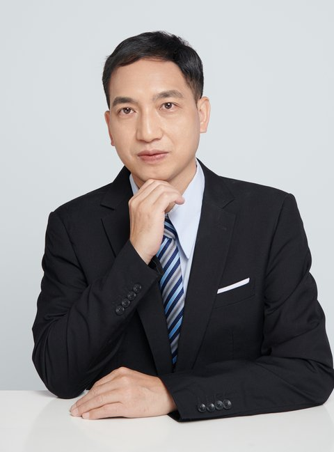

Zhaobing Jiang
Chairman, Nanjing Optiya Information Technology Co., Ltd.
Professor | Adjunct Supervisor at Northwestern Polytechnical University, Nanjing University of Aeronautics and Astronautics, and Xi'an Jiaotong University
About
I am the Chairman of Nanjing Optiya Information Technology Co., Ltd. and hold the technical title of Professor. I serve as an adjunct supervisor at Northwestern Polytechnical University, Nanjing University of Aeronautics and Astronautics, and Xi'an Jiaotong University. I was a postdoctoral researcher at Shanghai Jiao Tong University (2012–2014) and a visiting scholar at the University of Southampton, UK (2015). Before that, I spent years at the PLA University of Science and Technology, where I served as an associate professor, department deputy director, and company commander.
My research interests include multi-body system dynamics, fluid–structure interaction, computational fluid dynamics (LBM-LES), intelligent prediction with deep learning, embodied intelligence data and applications, physics AI, and big data and deep learning. I have published 20+ papers in international journals such as Journal of Hydrology, Chinese Journal of Aeronautics, Drones, Thermal Science and Engineering Progress, and Journal of Marine Science and Application, as well as leading Chinese journals including Shipbuilding of China and The Ocean Engineering (see Publications). I have led 4 national-level research projects, 1 Jiangsu Provincial fund project, and more than 20 commissioned projects from research institutes, and have participated in a number of national-level and military key R&D programs. I contributed to major engineering projects including the Nansha island and reef construction, the Daxie Island floating bridge construction, and the Zhoushan Island-connecting bridge collision avoidance system. I have also authored 2 monographs and hold multiple invention patents and software copyrights.
Since 2017, my company has undertaken more than 90 commissioned projects in numerical simulation, fluid simulation, and intelligent prediction, covering waterway hydrology, aviation meteorology, new energy, and industrial fluid applications, with full-chain delivery capability from physical modeling and numerical computation to intelligent software platforms. In AI+CAE, we deeply integrate deep learning, big data, and CFD simulation to develop intelligent waterway terrain prediction and airport wind field forecasting systems, and to build a fluid simulation cloud platform on OpenFOAM, making simulation smarter and more automated (see Projects).
My work has been recognized with 4 Military Science and Technology Progress Awards (including a First Prize in 2025), the Silver Award of the National Postdoctoral Innovation and Entrepreneurship Competition, the First Prize of Science and Technology Innovation of the Changjiang Waterway Bureau, and the Second Prize of Science and Technology of the China Institute of Navigation. I am a member of the Jiangsu Provincial "333 Project" High-level Talent Program and serve as an expert of the Jiangsu Aviation Industry Association Expert Pool (see Award Certificates).
Beyond research, I keep learning through online courses and have earned 25 certificates on the Chinese University MOOC (iCourse) platform, covering computing, artificial intelligence, literature, and arts (see MOOC Certificates). In my spare time I also compose classical-style Chinese poems, with over 100 works written and 30 selected pieces presented (see Poems).
Education
- 2005–2008 Ph.D. in Bridge and Tunnel Engineering, PLA University of Science and Technology
- 2002–2005 M.S. in Fluid Mechanics, PLA University of Science and Technology
- 1998–2002 B.S. in Applied Meteorology, PLA University of Science and Technology
News
- [2025] Awarded the First Prize of the Military Science and Technology Progress Award.
- [2023] Won the Silver Award at the National Postdoctoral Innovation and Entrepreneurship Competition, and was named a National Outstanding Innovation and Entrepreneurship Postdoctoral Fellow.
- [2015] Visiting scholar at the University of Southampton, UK.
- [2012] Joined Shanghai Jiao Tong University as a postdoctoral researcher.
Honors & Awards
- Military Science and Technology Progress Awards ×4 (including First Prize, 2025)
- First Prize of Science and Technology Innovation, Changjiang Waterway Bureau
- Second Prize of Science and Technology Award, China Institute of Navigation
- Silver Award, National Postdoctoral Innovation and Entrepreneurship Competition (2023)
- National Outstanding Innovation and Entrepreneurship Postdoctoral Fellow
- Second Prize (municipal group), Zhuhai "Science and Technology Innovation Cup" Innovation and Entrepreneurship Competition
- Jiangsu Provincial "333 Project" High-level Talent Program (7th Batch)
- Jiangsu Provincial "Qinglan Project" Talent Program
- "Chuangju Jiangning" High-level Entrepreneurial Talent
- Changsha Civil-Military Integration High-level Talent
- Outstanding Advisor Award
Research Interests
- Multi-body system dynamics and floating structures
- Fluid–structure interaction and computational fluid dynamics (LBM-LES)
- Intelligent prediction: deep learning for hydrodynamic and waterway terrain forecasting
- Numerical simulation and engineering applications in naval architecture and ocean engineering
- Embodied intelligence data and applications
- Physics AI
- Big data and deep learning
Award Certificates
View all award certificates (48 certificates available for download; military certificates are provided in mosaiced versions for privacy).
- First Prize, Military Science and Technology Progress Award (2025) — [View] [Download]
- Silver Award, National Postdoctoral Innovation and Entrepreneurship Competition — [View] [Download]
- Science and Technology Award, China Institute of Navigation (2025) — [View] [Download]
![[View]](./awards/military_sci_tech_first_prize_2025_mosaic.png){kind=link}
![[View]](./awards/national_postdoc_silver.jpg){kind=link}
![[View]](./awards/cins_sci_tech_award_202502.jpg){kind=link}
Contact
Nanjing Optiya Information Technology Co., Ltd.
Room 303, Building 3, Yincheng INC Center, No. 59 Tianyuan West Road,
Jiangning District, Nanjing, Jiangsu, China
Email: owen9020@126.com | GitHub: ZhaobingJiang